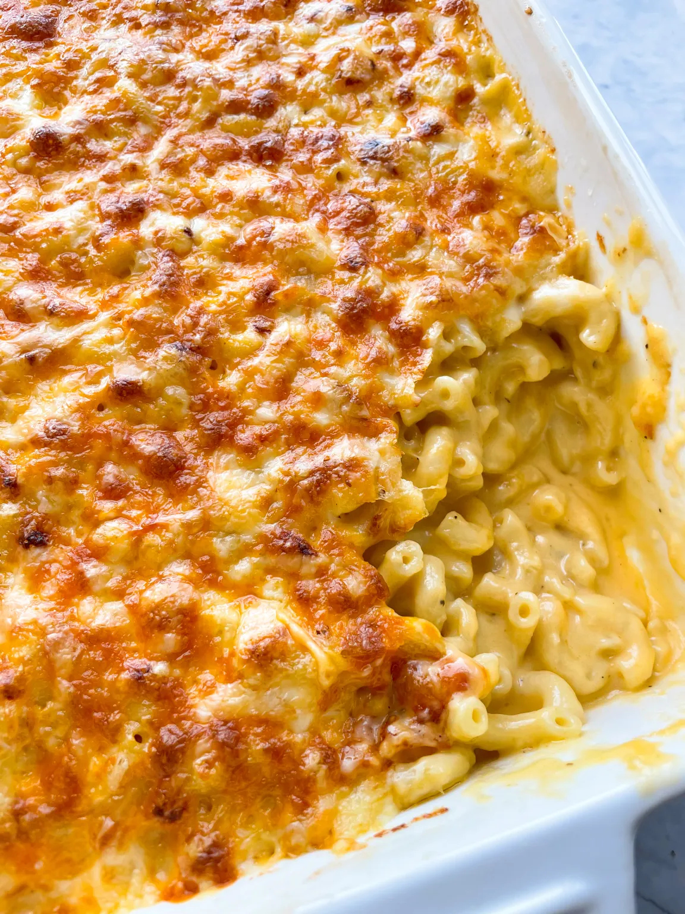

Home
Homemade Mac and Cheese

Description
When it comes to comfort food, there are few things better than a delicious plate of homemade macaroni and
cheese.
The recipe, provided below for convenience, is by Yanikie Tucker from her blog JamDownFoodie.
This is a fantastic Caribbean style mac and cheese recipe that you can make for those special family occaisions
or a well-deserved treat to yourself. :)
Ingredients
- **This is a half recipe. Double ingredients for a larger family sized serving.
- ½ of 1lb box of elbow macaroni
- ½ tablespoon salt (for boiling macaroni)
- 2 tablespoons of butter
- 1.5 tablespoons of flour
- 2 cups of whole milk
- ½ teaspoon nutmeg
- ¼ of an onion
- 2 tablespoon mustard
- 1 cup aged cheddar
- 1.5 cups mild cheddar
- 1 cup mozzarella
- Cracked pepper
Steps
- Preheat the oven to 400 degrees.
- In a large pasta pot, bring water and salt to a boil.
- Add in elbow macaroni (or choice of pasta) and cook until al dente. The pasta will continue to cook in the
oven so do not overcook the pasta or allow it to get too soft.
- Drain pasta in a colander and set aside.
- In a small saucepan, make a roux by mixing flour and butter together over medium low heat. Allow roux to
cook for about 1 minute.
- Add in milk to the roux mixture and stir. Allow milk to cook until it slightly thickens, about 2 minutes.
- Add in nutmeg, mustard and grated onion to the milk mixture. Whisk well.
- Add in cheese and stir with a wooden spoon. Keep stirring until the cheese melts.
- Once the cheese is melted, add cooked macaroni and cracked pepper. Use the wooden spoon to combine macaroni
and cheese mixture. Be sure to coat all of the pasta in the cheese sauce.
- Pour cheesy pasta into an ungreased oven ready dish. Use the spoon to make sure the macaroni is leveled and
even in the pan.
- Liberally sprinkle the top of the casserole with more shredded cheese.
- Bake on 400 for 15-20 mins. Keep checking and pull out just as the cheese on top melts and the cheese begins
to get bubbly and golden brown.